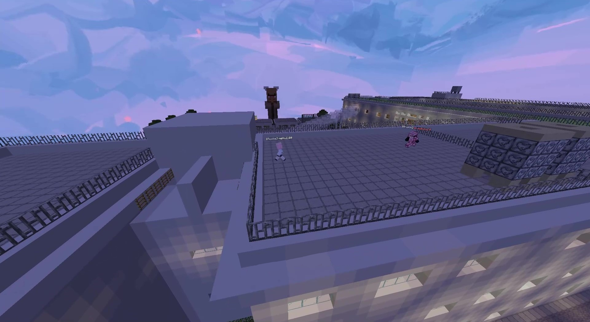

【速報】Rankedごつシーズン2、突如開幕ｗｗｗ 伝説の神ゲー復活にサーバーがパンク寸前

どうも、Niju Server まとめ速報です！
本日、全Niju Server民に激震が走りました。
かつて圧倒的な人気を誇りながらも、惜しまれつつ過疎化により幕を閉じた伝説の企画...
「Rankedごつ」が、シーズン2として帰ってくるとのこと！！
人気すぎて鯖落ち寸前！？突如始まったオープンベータテスト
「Rankedごつ」とは、特殊なルールを持つ鬼ごっこに ガチのランク制度（MMR） を導入した、Niju Serverの歴史に残る競技的企画です。
最近は全く開催されておらず、誰もが「オワコン」「サ終」だと思っていました。しかし本日午後、運営から突如として 「シーズン2 ベータテスト開始」のアナウンスが！
スレの反応：手のひら返しが止まらないｗｗｗ
「過疎」「オワコン」と馬鹿にしていた鯖民たちも、いざ復活すると大興奮。スレの流れが速すぎて追えません。
【朗報】Rankedごつ、ついに復活
1 ：名無しNiju号
：2025/12/09(火) 18:05:00 ID:Pf3k5Xo10
生きててよかった
運営のこと信じてたぞ
生きててよかった
運営のこと信じてたぞ
2 ：名無しNiju号
：2025/12/09(火) 18:05:15 ID:zb2v4tfMd
なんだこの盛り上がり 古参がめっちゃイキイキしてるじゃん
とりあえず参加したけど 緊張感やばくておもろいわこれ
なんだこの盛り上がり 古参がめっちゃイキイキしてるじゃん
とりあえず参加したけど 緊張感やばくておもろいわこれ
5 ：名無しNiju号
：2025/12/09(火) 18:05:44 ID:/QiC5PG00
>>2
沼へようこそｗ
Rankedごつ のヒリつきは、他のゲームじゃ味わえない
>>2
沼へようこそｗ
Rankedごつ のヒリつきは、他のゲームじゃ味わえない
7 ：名無しNiju号
：2025/12/09(火) 18:08:14 ID:uf7aosAV0
満員で入れねえｗｗｗ
先月まで過疎ってたの嘘みたいだな やっぱみんなごつに飢えてたんだな...
満員で入れねえｗｗｗ
先月まで過疎ってたの嘘みたいだな やっぱみんなごつに飢えてたんだな...
5 ：名無しNiju号
：2025/12/09(火) 18:06:36 ID:hiwacjsf0
おい、人多すぎてラグくね
鯖強化はよ
おい、人多すぎてラグくね
鯖強化はよ
12 ：名無しNiju号
：2025/12/09(火) 18:10:10 ID:PL8i2PVad
>>5
緊急メンテ入ったぞｗｗｗｗｗ
勢いすごすぐるｗｗｗ
>>5
緊急メンテ入ったぞｗｗｗｗｗ
勢いすごすぐるｗｗｗ
16 ：名無しNiju号
：2025/12/09(火) 18:11:05 ID:XfM0fDBUp
ゆきおのマップ改修されてて神。
あの 「絶対捕まるデッドゾーン」 が修正されてる！運営有能！
ゆきおのマップ改修されてて神。
あの 「絶対捕まるデッドゾーン」 が修正されてる！運営有能！
23 ：名無しNiju号
：2025/12/09(火) 18:16:40 ID:/CrYVAvb0
いきなり元Vertexにぼこされたんだけどｗ
ごつやっぱ格差ありすぎだなｗ
いきなり元Vertexにぼこされたんだけどｗ
ごつやっぱ格差ありすぎだなｗ
25 ：名無しNiju号
：2025/12/09(火) 18:17:22 ID:iBeXq0nS0
>>23
まあそういうゲームだからしかたない
こういう 魔境 なのが面白いんだよ...
>>23
まあそういうゲームだからしかたない
こういう 魔境 なのが面白いんだよ...
28 ：運営
：2025/12/09(火) 18:19:00 ID:ADMIN
予想以上の反響でサーバーが悲鳴を上げてます。
みんな、おかえり！
予想以上の反響でサーバーが悲鳴を上げてます。
みんな、おかえり！
6 ：名無しNiju号
：2025/12/09(火) 18:06:58 ID:c6L55lCap
ごつきたああああああああああああ
ごつきたああああああああああああ
久しぶりのビッグウェーブに、サーバー全体がお祭り騒ぎになっています。
運営の「おかえり」という言葉に、全プレイヤーが涙しました。
シーズン2の正式稼働に向けて、今のうちにベータテストで腕を磨いておきましょう！ランク「Vertex」を目指せ！